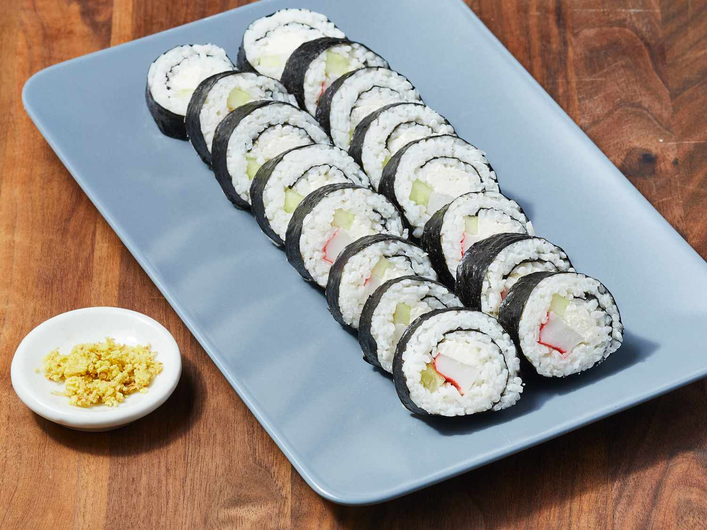
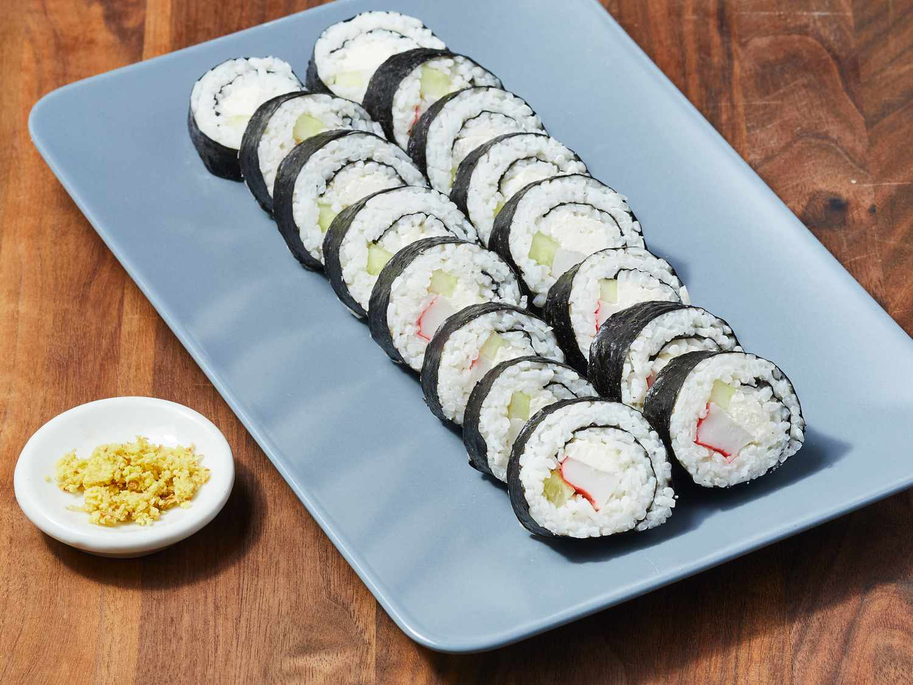

Our Specialties
Introduction
Chicago Food Planet is an American chain of restaurants that enables
food lovers to come together and enjoy food. It provides online delivery
of food items, 24*7. At Chicago Food Planet, you will have some of the
city's best destination cafes, bistros, restaurants, fast food, and
others under one roof. Chicago Food Planet provides its customers a
heady combination of surreal surroundings in addition to tongue-tickling
food of different cuisines. Chicago Food Planet is not only the best
choice for traditional food at any hour of the day but also a good place
for children to have fun. We provide entertaining facilities, such as
puppet shows, for children.
Our Origin
Chinese cuisine comprise cuisines originating from China. Because of the
Chinese diaspora and historical power of the country, Chinese cuisine
has influenced many other cuisines in Asia and beyond, with
modifications made to cater to local palates.
Our Specialties
Traditional Chinese food has to always be fresh. Most dishes are filled
with huge quantities of vegetables, grass-fed meats, seafood and herbs
and spices. Every ingredient is handpicked for medicinal purposes. The
Chinese people rarely eat canned/frozen food.
Our Management
General Manager: The overall head of the hotel who is responsible for
the hotel's performance, financial management, and ensuring a high level
of customer satisfaction. Front Office Manager: Responsible for managing
the front desk, reservations, and guest services.

 
